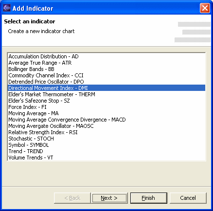
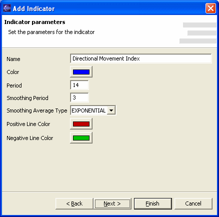

The historical and intraday chart windows are capable to draw, in addition to the price and volume chart, a number of technical analisys indicators. Right-clicking on the chart and selecting the Add and Modify items it will be possible to add or modify the indicators drawn.

Each indicator has a specific set of parameters. By selecting an indicator a dialog will be shown that allows the customization of the specific parameter as is needed.

Name
Name that will be assigned to the indicator on the chart.
Selected Periods and Moving Average Periods
These are parameters specific to the selected Stochastic indicator. Other
indicators will show other parameters in this position. Refer to the indicator's
documentation to know the meaning and how to use the parameters for the
technical analisys.
Color
Color used to draw the indicator.
Insert indicator
Allow to insert the new indicator on the selected chart zone (On the selected
zone) or on a new zone (On a new zone). The selected zone is the one over
which the mouse button was pressed.
To learn more about technical indicators and how to use them, visit the following sites:
BigCharts Glossary: